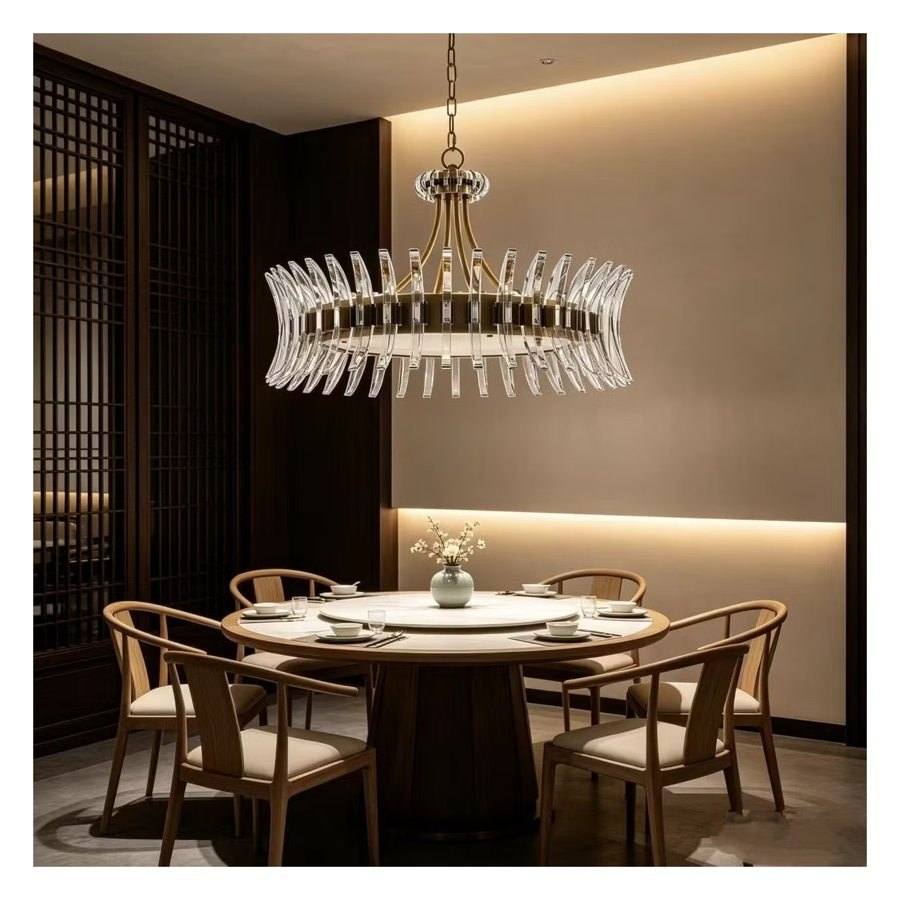
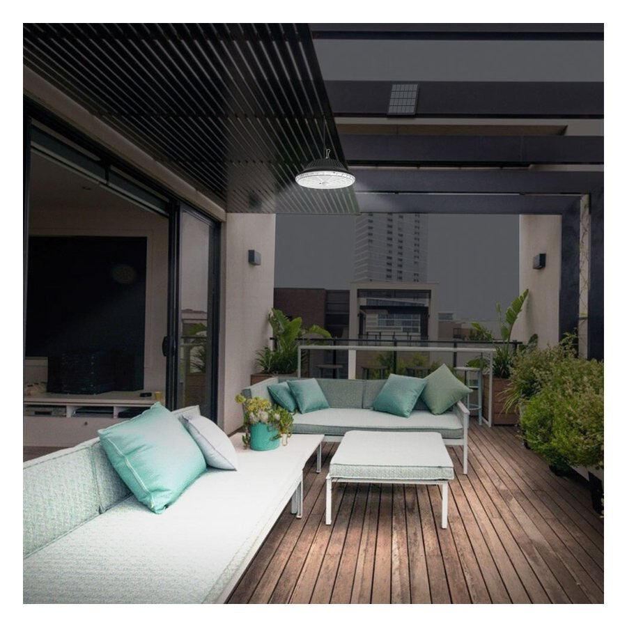

Start / Kronleuchter & Pendelleuchten / Funk-Dimmer-Set für Deckenleuchten (Empfänger-Dimmer mit Fernbedienung)

Abbildung ähnlich – zeigt den Produkttyp.
Kronleuchter & Pendelleuchten
Funk-Dimmer-Set für Deckenleuchten (Empfänger-Dimmer mit Fernbedienung)
Funk-Triac-Dimmer mit Fernbedienung, der sich hinter dem Deckenbaldachin verstecken lässt und die vorhandene Leuchte dimmbar macht.
Der kompakte Empfänger wird in die Leuchte oder hinter den Baldachin eingebaut, vorhandene Wandschalter bleiben nutzbar. Entscheidend für den Handel sind eine EU-Funkzulassung (RED), Lastbereich für LED und eine verständliche deutsche Anleitung.
Technische Daten
| Spannung | AC 100-240 V |
|---|---|
| Dimmung | 256 Stufen, 0-100 %, flackerfrei |
| Dimmmodus | Phasenanschnitt/-abschnitt per DIP-Schalter |
| Zolltarifnummer (HS) | 85371098 |
EU-Normen und Vorschriften
EN 60669-2-1Elektronische Schalter und Dimmer für Hausinstallationen (LVD 2014/35/EU)RED 2014/53/EUFunkanlagen (je nach Band EN 300 220-2 bei 868 MHz bzw.; EN 300 328 bei 2,4 GHz; EN 301 489-1/-3)RoHS 2011/65/EUBeschränkung gefährlicher Stoffe in Elektro-/ElektronikgerätenElektroG · BattGWEEE-Registrierung (stiftung ear); Batterie der Fernbedienung (Knopfzelle) nach Batterieverordnung (EU) 2023/1542GPSR (EU) 2023/988Produktsicherheit mit EU-Verantwortlichem, deutsche Anleitung mit Lastangaben
Passt dazu

Weitere Produkte dieser Kategorie

Luxus-Kristall-Kronleuchter, Gold, Ø 80 cm (K9-Kristall, LED)Goldfarbener Eisen-Kronleuchter mit geschliffenem K9-Kristallbehang für Wohnzimmer, Foyer und Hotelbereich.
Moderner minimalistischer LED-Ring-Kronleuchter, Ø 60 cm, AluminiumSchlichter Aluminium-Ring mit LED und höhenverstellbarer Abhängung für Esstisch, Küche und Wohnbereich.
Sputnik-Kronleuchter 6-flammig, Eisen/GlasModerner Sputnik-Kronleuchter mit sechs Armen und Glaskörpern im Mid-Century-Stil.
Drum-Kronleuchter mit Muschel-/Kristall-Trommelschirm, GoldGroßer Kronleuchter mit zylindrischem Trommelschirm aus Kristall und Muschel für Treppenhaus, Lobby und Esszimmer.
Empire-Kronleuchter mit K9-Kristall-Behang (Raindrop), 11-flammig E14, Gold/Chrom
Maria-Theresia-Kristallkronleuchter, groß (Foyer/Projekt), GoldGroßer Maria-Theresia-Kronleuchter mit Kristallkörper für Hotelfoyers, Villen und Veranstaltungsräume.
Mehrstufiger Kristall-Kronleuchter, lang (Treppenhaus/Foyer), LEDLanger, mehrlagiger Kristall-Kronleuchter mit Edelstahl-Deckenbasis für Treppenhaus, Villa und Lobby.
Wasserfall-Kronleuchter mit K9-Kristall, Edelstahl, LED (Treppenhaus/Atrium)Langer Kristall-Kronleuchter im Wasserfall-Design für hohe Treppenhäuser und Atrien, in mehreren Größen und Farben.
Linearer Kronleuchter für Kücheninsel / EsstischLanggezogene LED-Hängeleuchte aus Metall, die Kücheninsel oder Esstisch mit einer durchgehenden Lichtlinie ausleuchtet.
Perlen- und Holzperlen-KronleuchterKronleuchter mit Eisenrahmen und Holzperlen-Behang im Used-Look für Wohn- und Essbereiche im Landhaus- und Boho-Stil.
Geweih-Kronleuchter (Kunstharz)Rustikaler Kronleuchter mit Geweihstangen aus Kunstharz und Eisenrahmen für Lodge-, Chalet- und Landhausräume.
Käfig- und Laternen-KronleuchterMehrflammiger Vogelkäfig-Kronleuchter aus Eisen mit Hanfseil-Details im Industrial- und Landhaus-Stil.
Kugel- und Globe-KronleuchterModerner Kronleuchter mit Glaskugeln an einem Eisenrahmen, nordisch-schlicht und mit Kristalldetails.
Kronleuchter im KerzenstilKlassischer Kronleuchter mit Kerzenlampen an Eisenarmen, kombiniert mit K9-Kristall, Glas und Stoffschirmen.
Rattan- und Boho-Kronleuchter (geflochten)Handgeflochtene Rattan-Hängeleuchte mit Eisenrahmen und wählbaren Stoffbezügen für Boho- und Naturstil.
Speichen- / Wagenrad-KronleuchterGroßer runder Wagenrad-Kronleuchter mit Metallrahmen und Glasröhren für Esstisch, Foyer und Landhausräume.
Bubble-Glas-KronleuchterCluster-Kronleuchter aus Glasblasen und Glaskugeln an einem Metallgestell – dekorativer Blickfang für Essplatz, Treppenhaus und Lobby.
Kronleuchter aus mundgeblasenem GlasHandgefertigter Glaskronleuchter mit mundgeblasenen Schirmen und LED-Lichtquelle – ein Unikat-Charakter für Eingang, Treppenhaus und Esszimmer.
Quasten- und Ketten-KronleuchterKronleuchter mit herabfallenden Aluminiumketten und Quasten in Gold oder Schwarz – leichter, fließender Blickfang für Foyer, Hochzeitslocation und Villa.
Art-déco-KronleuchterArt-déco-Kronleuchter aus Messing und Alabaster mit LED – geometrische Eleganz für Schlafzimmer, Lobby und Boutique-Hotel.
Mid-Century-Modern-KronleuchterMid-Century-Kronleuchter mit goldenen Metallarmen und Glaskugeln im Sputnik-Stil – schlanke Linien für Wohn- und Essbereich.
Industrie-Kronleuchter aus RohrenMinimalistischer Loft-Kronleuchter mit Rohrstruktur aus Stahl/Aluminium und LED – für Cafés, Lofts und Büros.
Rustikaler Schmiedeeisen-KronleuchterRustikaler schwarzer Kerzen-Kronleuchter aus Eisen mit geschwungenen Armen – Landhaus-, Lodge- und Gastro-Ambiente.
Kinetischer Mobile-KronleuchterBalance-Kronleuchter im Mobile-Stil mit beweglichen Eisenarmen – skulpturaler Blickfang im skandinavischen Design.
LED-Ring-Kronleuchter (Aluminium/Acryl, 1–3 Ringe)Minimalistische Ring-Pendelleuchte mit fest verbauter LED in Durchmessern von 40 bis 100 cm.
Wellen-LED-Kronleuchter (Acryl, geschwungene Lichtlinie)Geschwungene LED-Pendelleuchte aus Acryl mit weicher, wellenförmiger Lichtlinie.
Geometrischer Box-Kronleuchter (Eisenrahmen, 4-flammig, Schwarz/Messing)Laternen-Kronleuchter mit geometrischem Eisen-Boxrahmen und vier mitgelieferten LED-Lampen.
Cluster-Pendelleuchte mit Glaskugeln (mehrflammig, Gold)Mehrflammige Pendelleuchte mit goldenem Rahmen und gruppierten Glaskugeln in 60/80/100 cm.
Blatt-Kronleuchter „Ginkgo“ (Eisen/Kristall, E14–E27)Pendelleuchte im Ginkgoblatt-Design mit Eisen-/Kristallkörper und Standardfassungen.
Pusteblumen-/Feuerwerk-Kronleuchter (Gold, Kristall, Ø 50 cm)Strahlenförmige Sputnik-Pendelleuchte in Gold mit Kristallelementen, Ø 50 cm, Höhe 150 cm.
Papier-Pendelleuchte „Reispapier-Laterne“ (Ø 40–60 cm, E27)Handgefertigte Papierlaterne mit Eisenrahmen im Wabi-Sabi-Stil, Ø 40/50/60 cm, E26/E27.
Keramik-/Porzellan-Kronleuchter „Magnolienblüte“ (Creme, Treppenhaus)Kronleuchter aus cremefarbenen Keramik-Blütenblättern für hohe Räume und Treppenhäuser.
Muschel- und Capiz-KronleuchterKronleuchter aus geschnittenen Capiz-Muschelplättchen am Metallrahmen mit weichem, perlmuttartigem Streulicht.
Kronleuchter in Horn-/Knochen-OptikMehrarmiger Kronleuchter mit Geweih-Armen aus Kunstharz in Horn-/Knochen-Optik und goldfarbenem Rahmen.
Lederumwickelter KronleuchterHängeleuchte mit Lederelementen, Glaskugelschirm und Metallteilen im modernen Luxus-Look.
Alabaster-KronleuchterMehrflammiger Kronleuchter mit Alabaster-Schirmen an Kupferrahmen und warmem, gestreutem Licht.
Neoklassizistischer KronleuchterVergoldeter Eisenrahmen mit Kristallelementen im neoklassizistischen Stil.
Gotischer KronleuchterSchwarzer Schmiedeeisen-Kerzenkronleuchter im mittelalterlich-gotischen Stil.
Barock-Kronleuchter
Tiffany-Glas-KronleuchterHängeleuchte mit Buntglas im Tiffany-Stil an Eisenrahmen mit antikem Charakter.
Acryl-Kronleuchter (PMMA) mit LED, Eisenrahmen messingfarbenModerner Kronleuchter mit Acryl-Elementen auf messingfarbenem Eisenrahmen für Ess- und Wohnbereich.
Beton-Kronleuchter, Pendelleuchte aus Zement und Harz mit LED, 18 cmPendelleuchte im Industrial-Look aus Zement-Harz-Gemisch, in drei Lichtfarben und mit Maßanfertigung lieferbar.
Seil-Kronleuchter aus Hanfseil mit Eisenrad-Rahmen, E27, Retro-NautikRunde Pendelleuchte aus Hanfseil und schwarzem Eisenrad im maritimen Retro-Look für Café, Esszimmer und Lobby.
Spiegelglas-Kronleuchter mit verspiegelter Glaskugel, LED
Holografischer Kronleuchter, irisierend, Edelstahl/Kristall, LED, 100 cmLinearer Kronleuchter mit schillernden Blütenelementen, in acht Farben, Längen 100/120/150 cm.
Feder-Kronleuchter mit weißen Federn, Ø 30 cm, LEDRomantische Pendelleuchte aus weißen Federn für Schlafzimmer und Esszimmer.
Stoff-Kronleuchter mit Seidenschirm in Ufo-Form, Ø 30/40 cm, LEDPendelleuchte mit italienischem Seidenstoff auf Eisenrahmen, weich leuchtend im Wabi-Sabi-Stil.
Smarter Kronleuchter mit App-Steuerung, Aluminium gold, 100 × 100 × 50 cm

RGBW-Farbwechsel-Kronleuchter (WLAN, App- und Sprachsteuerung, dimmbar)Moderner LED-Kronleuchter mit RGB-Farbwechsel und wählbarer Weißlichtfarbe, steuerbar per WLAN-App und Sprachassistent.

Solar-Außenkronleuchter (Hängeleuchte mit Solarpanel, Bewegungssensor, Fernbedienung)Kabellose Hängeleuchte für überdachte Außenbereiche: Solarpanel, 4.000-mAh-Akku und Bewegungssensor.
Kristall-Ersatzbehang für Kronleuchter (Prismen-Set, 20 Stück, K9-Kristallglas)Prismen-Set aus K9-Kristallglas zum Ersetzen oder Aufwerten des Behangs von Kronleuchtern und Lüstern.
Kegel-Pendelleuchte, Eisen, schwarz, E27Schlichte Pendelleuchte mit Eisenkegel-Schirm für Esstisch und Gastronomie.
LED-Röhren-Pendelleuchte, dimmbar, Aluminium, 10–40 WSchlanke Zylinder-Pendelleuchte mit integriertem LED für Kücheninsel und Esstisch.
Marmor-Pendelleuchte, Zement/Marmor-Design, EsstischPendelleuchte mit Marmor-/Zement-Optik für Wohn- und Hotelbereiche.
Rauchglas-Pendelleuchte, rund, EsszimmerRunde Pendelleuchte mit getöntem Rauchglas-Schirm.
Aluminium-LED-Pendelleuchte, modern, WohnzimmerModerne LED-Pendelleuchte aus Aluminium mit schlankem Schirm.
GU10-Strahler, schwenkbar, Aluminium, für SchienensystemSchwenkbarer Aluminium-Spot für GU10/MR16 am Schienensystem.
Plissee-Stoffschirm-Leuchte, LED, SchlafzimmerRetro-LED-Leuchte mit Plissee-Stoffschirm für Nachttisch/Schlafzimmer.
UFO-Metall-LED-Pendelleuchte, rund, NordicRunde flache Metall-Pendelleuchte (UFO-Form) mit LED.